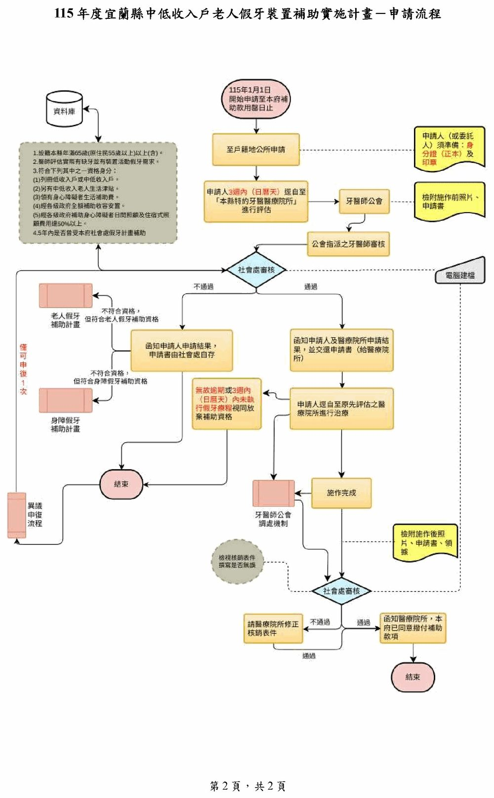

宜蘭縣中低收入戶老人假牙裝置補助申請須知（Q&A）
以下說明整理自宜蘭縣政府社會處公告之「115年度宜蘭縣中低收入戶老人假牙裝置補助實施計畫」，僅供 參考，實際規定請洽戶籍所在地之鄉（鎮、市）公所為準；本頁下方之「特約牙醫醫療院所名單」為政府 公告資料，可依縣市、鄉鎮市、機構類型與關鍵字篩選查詢。
📝 申請資格
Q1：宜蘭縣中低收入戶老人假牙裝置補助的申請資格為何？
設籍本縣滿1年，年滿65歲（足歲；原住民55歲以上）以上，經醫師評估缺牙需裝置活動假牙，並符合 下列條件之一者始得申請：
- 具低收入戶或中低收入戶資格。
- 領有中低收入老人生活津貼。
- 領有身心障礙者生活補助費。
- 經各級政府全額補助收容安置。
- 經各級政府補助身心障礙者日間照顧及住宿式照顧費用達50%以上。
服務對象同一顎或同一牙位於5年內（亦即自110年起曾申請者，倘為110年度申請， 則依施作完成月份進行推算）已受本府社會處假牙補助者，不得再次申請補助，但假牙 維修費用不在此限。
🦷 補助內容與最高補助金額
Q2：補助態樣、裝置假牙類別及最高補助金額為何？
| 編號 | 補助態樣 | 裝置假牙類別 | 最高補助金額 |
|---|---|---|---|
| 1 | 上下顎全口活動假牙 | 雙側上、下顎全口假牙 | 4萬4,000元 |
| 2 | 上顎全口活動假牙 | 單側上顎全口假牙 | 2萬2,000元 |
| 3 | 下顎全口活動假牙 | 單側下顎全口假牙 | 2萬2,000元 |
| 4 | 上顎全口活動假牙，併下顎部分活動假牙 | 單側上顎假牙併下顎活動假牙 | 3萬9,000元 |
| 5 | 下顎全口活動假牙，併上顎部分活動假牙 | 單側下顎假牙併上顎活動假牙 | 3萬9,000元 |
| 6 | 上下顎部分活動假牙 | 雙側上、下顎部分活動假牙 | 3萬4,000元 |
| 7 | 上顎部分活動假牙 | 單側上顎部分活動假牙 | 1萬7,000元 |
| 8 | 下顎部分活動假牙 | 單側下顎部分活動假牙 | 1萬7,000元 |
| 9 | 固定式假牙（指牙冠或牙橋） | 固定式假牙（指牙冠或牙橋） | 4,400元/顆 |
| 10 | 活動假牙維修費 | 假牙破裂維修費/單顎 | 1,100元 |
| 假牙添加費/單顆 | 1,100元 | ||
| 假牙線勾/個 | 1,100元 | ||
| 假牙硬式襯底/座 | 3,300元 |
服務對象5年內最高補助金額不得逾4萬4,000元（活動假牙維修費不在此限）。上表整理自宜蘭縣政府 「115年度宜蘭縣中低收入戶老人假牙裝置補助實施計畫」附表，如有出入請以縣府最新公告為準。
📋 申請方式／流程／期限與應備文件
Q3：申請日期、受理單位與流程為何？
申請日期：當年度至縣府補助款用罄為止。
受理單位：戶籍地鄉（鎮、市）公所。
申請時應備資料：申請人身分證正本及印章；如委託他人申請則另需委託人身分證， 每人受委託申請以1案/年為限。

文字說明（圖片內容之無障礙替代文字）：
- 申請人自115年1月1日起，至戶籍地鄉（鎮、市）公所申請。
- 申請人應於3週內（日曆天）逕自至本縣特約牙醫醫療院所進行評估。
- 特約醫療院所送件至宜蘭縣牙醫師公會，由公會指派之牙醫師進行審核。
- 審核結果送本府社會處審核，結果分為「通過」與「不通過」：
- 通過：函知申請人及醫療院所並交還申請書，申請人逕自至原評估醫療院所 進行治療；無故逾期或3週內（日曆天）未執行假牙療程視同放棄補助資格。 施作完成後，經社會處複核通過即撥付補助款項，流程結束。
- 不通過：函知申請人申請結果（申請書由社會處自存）；如不符合本計畫 資格但符合「老人假牙補助計畫」或「身障假牙補助計畫」資格者，得轉介該計畫申請。
- 申請人如有異議，可提出異議申復（僅可申復1次），並由牙醫師公會 調處機制協助處理相關爭議。
☎️ 承辦單位聯絡資訊
Q4：有問題可以洽詢哪個單位？
洽詢單位：請逕洽戶籍地所在鄉（鎮、市）公所。
特約牙醫醫療院所名單
資料明細
本資料集共29筆，來源為宜蘭縣政府社會處公告「115年度宜蘭縣中低收入戶老人假牙裝置補助實施計畫－ 特約牙醫醫療院所名單」PDF。其中3筆（衛生福利部花蓮醫院、財團法人花蓮慈濟醫院、衛生福利部玉里 醫院）為跨縣市特約醫院，位於花蓮縣境內而非宜蘭縣，如實列於名單中，可用上方 「縣市」篩選查看。「機構類型」（醫院／衛生所／牙醫診所）依機構名稱是否含「醫院」「衛生所」關鍵字 啟發式推斷，非官方分類欄位，僅供參考；無經緯度座標，故本頁不含地圖。表格中 Google Map 星等與 評論數為2026-08-07一次性抓取之快照，不會隨時間自動更新，實際星等與評論請以 Google 地圖當下 顯示為準。